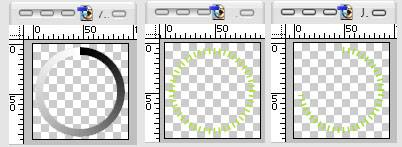
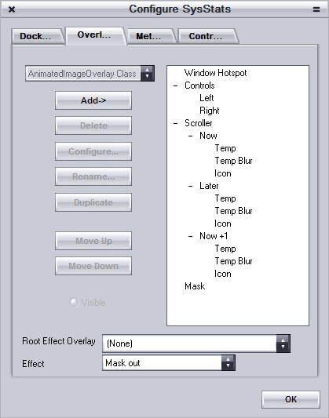
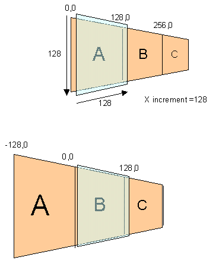
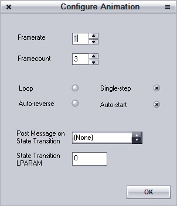
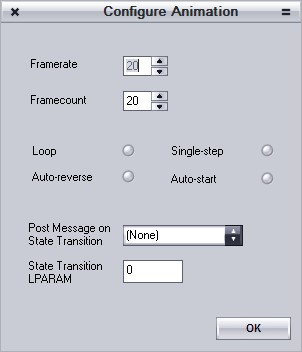
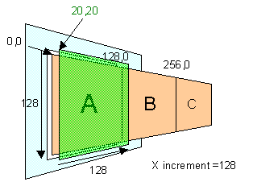

Overlays
Overlays are things that actually display something. Typically they display the value of a meter. You can use several overlays to display the value of one meter at the same time – so you might display CPU usage as both a bar graph and a number using:
- One meter for the CPU usage
- Two overlays:
- One for the bar graph
- One for the number.
SysStats includes the following types of overlay as standard (see also the script document for details of all the individual attributes):
All overlays let you specify the following features:
- Position
- Rotation
- Scale
- Transparency
- Visibility
- Effect Overlay (e.g. a mask)
When you use an overlay to display the value of a meter you typically provide the overlay with a format string that it uses to tell the meter how to provide its value (e.g. as a number, as part of a string etc. etc.). These formats are documented in the meter documentation, since they vary from meter to meter.
Overlays are drawn in a specific order so that each image can be overlayed on top of the others.
Effect Overlays
Each overlay can also be used as an effect overlay for another overlay. For example you can designate one overlay to be a mask for another overlay. Typically you set the effect overlay to be invisible, but that’s up to you :).
If the effect is set to Mask In then parts of the effect overlay that are black will be transparent, parts that are white will be opaque parts that are grey will be partially transparent.
If the effect is set to Mask Out then parts of the effect overlay that are black will be opaque, parts that are white will be transparent parts that are grey will be partially transparent.
Text
The text overlay displays some text. You can either display a fixed string or you can incorporate the value of a meter into the string. In addition to the standard features you can set the:
- Clipping Rectangle
- Font
- Font size
- Color
- Blur
- Bounding box
- AntiAlias Mode
- Text wrapping
Image
The image overlay displays an image. The image can be an icon, a PNG, a JPEG, a GIF etc. etc. You provide the overlay with a filename which can either be fixed or can incorporate the value of a meter.
You can associate an Animation Meter with the image if you have a multi-frame image.
Gauge
The gauge overlay displays a line at an angle determined by the value of a meter. In addition to the standard overlay features you can specify:
- The thickness of the line
- The color of the line
- The size of the arc it will sweep through
- How the meter value maps to the angle of the line.
Meter
The meter overlay displays the value of a meter as a bar. In addition to the standard overlay features you can specify:
- The color of the bar
- The thickness of the bar
- How the meter value maps to the length of the bar.
Mapped
The mapped overlay allows you to draw a complex shape that changes according to the value of a meter. It consists of two parts:
- An image that represents how the overlay looks when it is fully displayed (i.e. the meter has its maximum value).
- A mask image map that defines what portions of the full image are displayed when the meter does not have its maximum value.
The mask image map should be a grey-scale gradient. This map is thresholded by the overlay according to the value of the meter. Thus if the meter has a value of 50%, all pixels in the map who’s intensity is less than 50% will be set to black, all other pixels in the map will be set to white. This is then used to mask the full image: All pixels in the full image that are underneath the black part of the map will be visible, all other pixels will be invisible.
Here is an example used for an annular display showing the mask image, the full image and the result when the meter being monitored has a value of 200.

The overlay lets you set a maximum and minimum value for the meter. These are scaled to fit into the range 0 thru 255. So, for example, if your meter varies from 30 to 70 you should set the minimum value for the overlay to 30 and the maximum value to 70. Your map should use a gradient that varies from black to white as the overlay will map the meter values into that range.
Note also that your mask does not have to use all pixel values. It could just as easily use only three distinct values for example. This would give you a final image with just three discrete values.
Composite
A composite overlay is a handy way of grouping a set of related overlays together. You can then manipulate them as one thing. You can duplicate them, delete them, scale them, rotate them etc. etc. all as one unit.
Animator
The animator overlay is a special composite overlay. It allows you to animate the overlays that it contains as a single unit. You specify the start point, rotation, scale and transparency and also the end point, rotation, scale and transparency.
You then associate the animator overlay with an animation meter which controls how the animation proceeds. You would typically also use a controller to control the state of the animation meter.
In addition you can specify an effect overlay which is used to clip the whole animation. If the effect is Mask In the overlay should be white where you want to be able to see the contents of the animator overlay and black elsewhere. A greyscale mask will produce a partially-transparent image. Any part of the scroller overlay’s contents that are outside the bounds of the mask will also be invisible
Example Use
You can use this to implement a drawer (part of a docklet that slides in and out of the main docklet).
Scroller
The scroller overlay is a special composite overlay. It allows you to scroll the overlays it contains as a single unit. You can scroll the contents in any direction: Horizontally, vertically or diagonally – up or down, left or right.
Example Use
The following example is taken from the animated weather docklet. In this scroller there are three frames (Now, Later and Now+1) controlled by the ScrollerOverlay called Scroller:

The scroller configuration looks like this:

The window size is 128x128, so the X scroll increment (128) happens to be a full window width. The overlay called A is positioned at 0,0, B is at 128,0 and C is at 256,0. The first picture below shows the situation for the first frame of the animation – A is under the window. The second image show the situation when the animation has stepped to the second frame – The scroller composite overlay has shifted B under the window.

You have to associate an animation meter with the overlay to control how the scroller operates, e.g. whether It scrolls continuously, wraps around at the end, reverses direction at the end, how many ‘frames’ there are etc. etc.
The configuration of the animation overlay for the above looks like this:

- Framecount is equal to the number of frames held by the scroller composite overlay.
- Single-step is selected which means the animation will only advance to the next frame when it told to (for example by using a ValueSetter controller). For this reason the Framerate is ignored.
- Auto-start is set to true so that the animation can be made to step using a ValueSetter controller.
- PostMessage on StateTransition can be used to trigger a controller when an animation stops, starts or pauses at the start, end or in the middle of an animation. We aren’t interested in doing that here so we leave it as (None).
In addition you can associate a second animation meter with the overlay to implement smooth scrolling between each principal frame (otherwise the scroller will just jump to the next frame). This is the configuration for the smooth scroll animator used by the animated weather docklet shown above:

You just need to set the framerate and framecount as the scroller overlay will start and stop it as it needs to.
If the area you are scrolling is less than the size of the whole window you will probably want to assign an effect overlay of type Mask In to hide the rest of the contents of the scroller. E.g.:

In this case the scroller composite overlay is positioned at 20,20. The frames inside it are at the same coordinates as they were before (because their coordinates are always relative to the composite they are in). The problem is that part of frame B would be visible now too – and when A, B and C are scrolled, part of A would be visible on the left.
To fix this you can use a mask image (shown in green in the diagram above). This hides any part of the composite’s contents that aren’t directly underneath the mask. Specifically: the mask should be white where you want to be able to see what’s underneath and black elsewhere – a grey value will provide you with a partially transparent mask. Any part of the scroller overlay’s contents that are outside the bounds of the mask will also be invisible